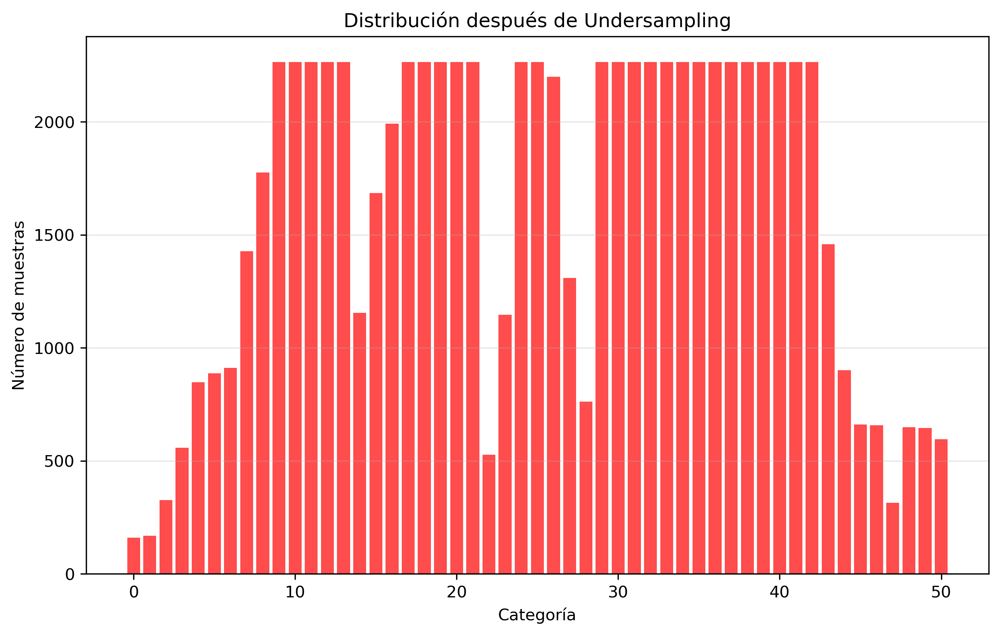
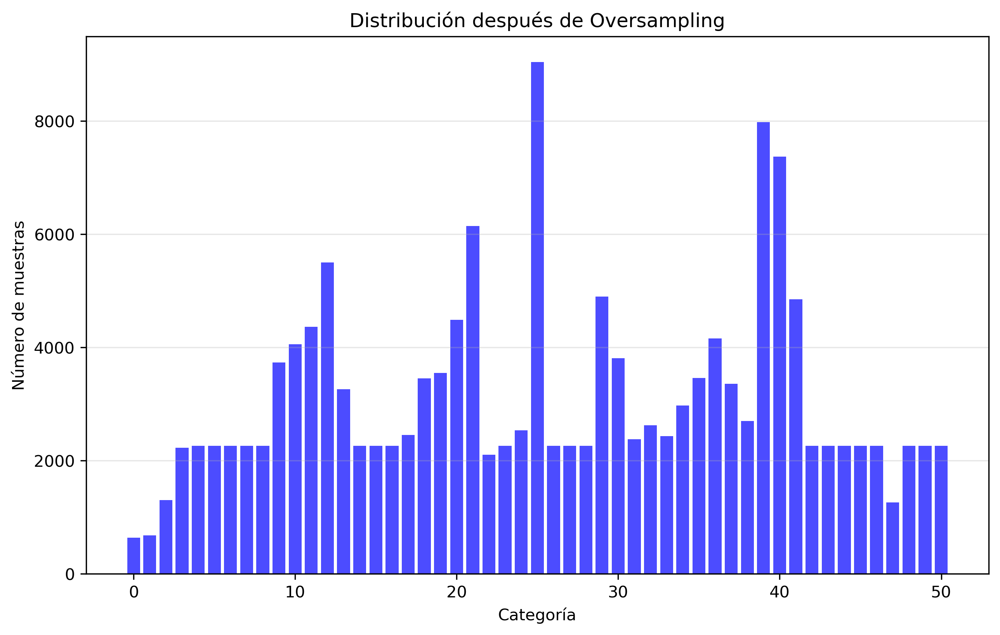

Week 19 – Dataset Balance Analysis and Latency Issue Investigation
February 3, 2026
Comprehensive dataset balancing strategies and identification of steering latency problems in the data acquisition pipeline
Week 19 focused on advanced dataset analysis and correction of critical issues identified in the data collection process. Following Enrique Shinohara's Master's work methodology, a detailed examination of dataset distribution and steering latency problems was conducted.
1. Dataset Balancing Strategies Implementation
Inspired by Enrique Shinohara's approach, I performed a detailed analysis of data distribution across 48 steering categories ranging from -0.7 (sharp left) to 0.7 (sharp right). The categories were defined with intervals of 0.025: (-0.7, -0.675), (-0.675, -0.65), etc.
Three balancing strategies were implemented and compared:
1. Original Dataset Distribution
Figure 1: Dataset distribution after applying undersampling strategy
The initial dataset showed significant imbalance with overrepresentation of certain steering values and underrepresentation of others, leading to model biases.
2. Undersampling Strategy
Figure 2: Dataset from undersampling strategy.
This approach reduces the number of samples in overrepresented categories to create a more balanced distribution.
3. Oversampling Strategy
Figure 3: Dataset from oversampling strategy.
This method increases samples in underrepresented categories through duplication or synthetic data generation.
4. Weighted Strategy
A weighted approach where samples from underrepresented categories receive higher weights during training.
Figure 2: Comparison of three balancing strategies: Undersampling, Oversampling, and Weighted approach
Initial Training Results: All three balancing strategies were implemented and corresponding training sessions were conducted. However, three persistent adverse effects remained across all approaches:
1. Zigzagging Behavior
Model exhibits oscillatory steering corrections even in straight road segments.
2. Lane Departures
Unexpected exits from the lane, particularly in straight sections.
3. Incorrect Turns
Mistimed or improperly executed turns at curves.
2. Critical Dataset Construction Issues Identified
Research into PilotNet documentation revealed that these symptoms commonly indicate specific dataset problems:
- Zigzagging: Typically caused by noise in the dataset
- Lane Departures: Often result from insufficient samples with steering ≈ 0
- Incorrect Turns
Further investigation of the dataset uncovered a significant technical issue:
Steering Latency Discovery
Analysis of consecutive frames revealed a systematic latency between steering commands and vehicle response:
2025-12-04T18_36_12-111464.jpg 0.1005
2025-12-04T18_36_12-161632.jpg 0.1053
2025-12-04T18_36_12-211651.jpg 0.1101
2025-12-04T18_36_12-261667.jpg 0.1142
2025-12-04T18_36_12-311761.jpg 0.1171
2025-12-04T18_36_12-361465.jpg 0.1189
2025-12-04T18_36_12-411711.jpg 0.1202
2025-12-04T18_36_12-461495.jpg
2025-12-04T18_36_12-511498.jpg 0.1217
2025-12-04T18_36_12-561665.jpg 0.1225
Consecutive images with incrementally increasing steering values despite essentially identical visual content
Key Finding: All these images are essentially identical visually, but the steering value increases progressively. This indicates a system latency of approximately 0.5 seconds between command issuance and vehicle response.
Implication: Since we aim to develop a reactive system, this latency is causing significant problems in model training and performance.
Potential Causes Identified:
1. Pygame Steering Acquisition Filtering
The Pygame function used for steering data acquisition may include filtering that introduces latency.
2. Warm-up Time Requirements
The system may require additional warm-up time before stable steering measurements are obtained.
3. Corrective Actions and Implementation Plan
Based on the identified issues, the following corrective strategies have been developed:
1. Consecutive Frame Reduction
Remove consecutive images that don't represent appreciable changes, keeping only one representative frame and averaging corresponding steering values.
2. Specialized Dataset Construction
Create specific datasets for different driving scenarios:
- Straight-line driving dataset
- Turning maneuvers dataset
- Correction maneuvers dataset
This approach allows more efficient addressing of inertia and warm-up effects produced by vehicle dynamics.
3. Dataset-Specific Processing Pipeline
For each specialized dataset, implement three specific processing steps:
Step 1: Warm-up Period Removal
Eliminate the first 1 second of driving (20 frames) to avoid warm-up effects.
Step 2: Redundant Frame Elimination
Remove consecutive images without significant changes. Since driving logs contain vehicle position and orientation data, we compare entries with closely matching positional data rather than directly analyzing images. This addresses effects due to inertia.
Step 3: Anomaly Filtering
Filter values inconsistent with the driving type. For example, straight-line driving should have steering values between -0.04 and 0.04. Values outside these limits are considered anomalous and removed.
Current Progress
A new dataset is currently being constructed incorporating all these corrective actions. Initial tests with steering = 0 (straight-line driving) are being conducted to validate the approach.
KEY FINDINGS THIS WEEK:
• Implemented three dataset balancing strategies following Shinohara's methodology
• Identified persistent model issues: zigzagging, lane departures, incorrect turns
• Discovered critical 0.5-second steering latency in data acquisition
• Developed comprehensive corrective action plan for dataset reconstruction
• New specialized datasets under construction with anomaly filtering
• Initial straight-line driving tests initiated to validate corrections
Conclusion:
Week 19 revealed fundamental issues in our data acquisition pipeline, particularly regarding steering latency. While balancing strategies alone didn't resolve model performance problems, the identification of systematic latency provides a clear path forward. The current dataset reconstruction effort, incorporating specialized scenario datasets and rigorous filtering, aims to create a cleaner, more reliable training foundation. Success in this correction phase is crucial for achieving stable, predictable autonomous driving behavior.